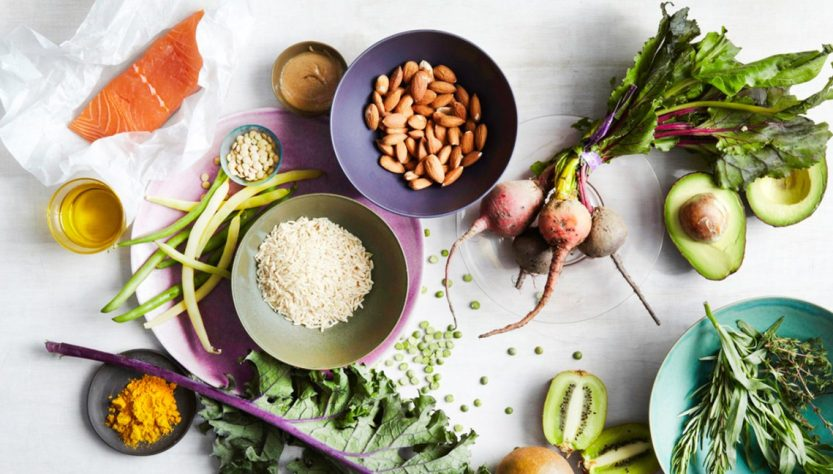

20 кратки и практични правила како да се храните поздраво
Навиките кои сте ги негувале со години е многу тешко да ги смените преку ноќ, но сепак од негде мора да се започне.
Мали промени прават големи нешта. Ако овие кратки правила пробате да ги внесете во вашето секојдневните, ден по ден, недела по недела, ќе имате големи ефекти и придобивки и врз килограмите, но и врз здравјето.
- Планирајте си ги оброците еден ден однапред – пред да одите на спиење направете план што и колку ќе јадете следниот ден, така превенирате непланирано јадење на ¼ бурек или цела пица следниот ден.
- Не и додавајте сол на храната никогаш – скоро сите намирници купени од продавница содржат во себе одреден процент на сол, така што не е потребно да досолувате. Вишокот натриум предизвикува задршка на течности во телото и може да биде причина за зголемување на крвниот притисок и многу други кардиоваскуларни проблеми.
- За готвење користете маслиново масло кое е многу постабилно на високи температури, споредено со сончогледовото кое брзо хидрогенизира и ги претвора мастите во транс облик кој се штетни за телото.
- Задолжително консумирајте салата со секој оброк, особено со ручекот и вечерата.
- Овошјето јадете го максимум до 14.00 часот и тоа околу 300-400 g најмногу (пр. 1 банана и 1 јаболко/ 2 мандарини и 1 киви и сл.)
- Консумирајте интегрални житарици од цело зрно и тоа најдобро за појадок – варен овес или пченица, овесни, ‘ржани, јачменови снегулки, зрна просо, киноа, хељда, леб подготвен од интегрални брашна, никулци и сл.
- Корнфлекс или било какви мусли во кои има други додатоци покрај житарките не се паметен избор за појадок, ако ја свртите етикетата ќе сфатите и зошто, полни се со шеќер и празни калории, но навидум маркетиншки изгледаат и се промовираат како здрав појадок. Бидете внимателни!
- Помеѓу секој оброк оставете барем по 3-4 во кои нема консумирате ништо освен вода. На гастроинтестиналниот тракт му е потребно време да ја обработи и апсорбира внесената храна, ако само додаваме нова попречуваме во нормалната дигестија.
- Внесувајте квалитетни и полновредни протеини кои ги има во месо, риба, јајца, мешунки.
- Јадете риба барем еднаш неделно за ручек или вечера, најдобро е печена или пак варена со зеленчуци како крем супа.
- Консумирајте минимална количина на купена и спакувана храна, ако сакате да се храните здраво правило е да си ја подготвувате храната сами затоа што и готвените опции што денес ги има во маркетите не се добар избор. Прво затоа што не знаеме како е зготвена таа храна, какво масло е користено и колку пати е пржено со него, колку сол е додадено или дали се додадени други додатоци како подобрувачи, засилувачи на вкус или згуснувачи.
- Не купувајте десерти од продавница никогаш, јадете десерт само ако вие си го направите – дури и житните плочки на кои е наведено дека нема шеќер се полни со скриени и празни калории кои воопшто не ви се потребни. За дома да си подготвите здрав десерт ви треба желба и многу малку време. Идеи за здрави десерти имате на линкот.
- Трудете се да јадете храна која содржи растителни влакна, 25 g на ден е препорачана количина кој е оптимална за добро варење и лесно празнење на цревата – влакна има во овошјето, зеленчукот, во семиња, житарки и сличо.
- Вечерата нека биде минимум 2 часа пред да одите во кревет, никако не вечерајте непосредно пред да спиете, дозволете му на гастроинтестиналниот тракт да одмори.
- Пробајте да јадете според правилото за intermittent fasting или да јадете само во временска рамка од 8 часа, а другите 16 часа да не внесувате храна. Повеќе за intermittent fasting и за придобивките од ваков начин на исхрана, прочитајте тука.
- Не додавајте шеќер во кафето или во чајот, ако сте навикнати ан вкусот на благо кафе полека ден по ден пробајте да се откажете од таа навика. Консумирањето секој по 2-3 кафиња со лажичка шеќер се околу 100 лажички шеќер на месечна база или околу 1 kg шеќер, тоа претворено во енергија е 4000 калории, а претворено во складирани масти е околу 450 g масно ткиво (размислете два пати следен пат пред да ставите шеќер). По 400 g вишок секој месец се 4.8 kg годишно кои можете да си ги додадете без да сетите.
- Ако консумирате млеко заменете го со ферментирани млечни производи како кефир, кисело млеко, а понекогаш и јогурт. Јогуртот нека не ви е прва опција (освен ако не е домашен) затоа што многу често во подготовката на јогурт производителите додаваат скроб за згуснување и текстура.
- Хидрирајте се доволно и тоа со вода. За да знаете отприлика колку вода му е потребно на вашето тело помножете си ја тежината со 35, ќе добиете вредност на вода во милилитри која ви е неопходна за правилно функционирање.
- Ако пиете кафе наутро пред појадок, првин испијте една чаша вода или цеден лимон со вода затоа што кафето е диуретик и ќе ве дехидрира.
- Не јадете на брзина само затоа што ете мора да се јаде сега, оброкот нека биде ритуал во кој ќе уживате максимално!
Успехот и резултатите не доаѓаат преку ноќ, бидете трпеливи и упорни, но и сигурни во себе дека сакате да успеете!